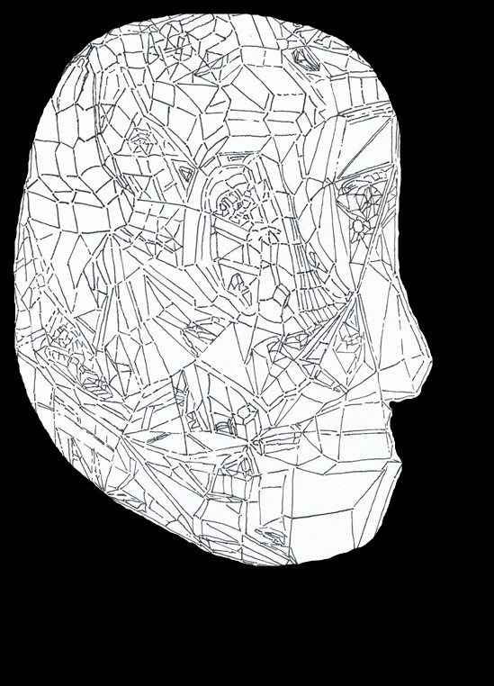

Taeyang Jung is a contemporary music composer from
South Korea. With a background in Mathematics from
the London School of Economics and Political Science,
his work integrates discrete mathematics with time and
sound frequency. He sees composition as a reflection
of life — neither chose to exist, yet both seek to paint
the colours of beauty from chaotic emptiness.
For Collaboration:
 t.jung@alumni.lse.ac.uk
t.jung@alumni.lse.ac.uk